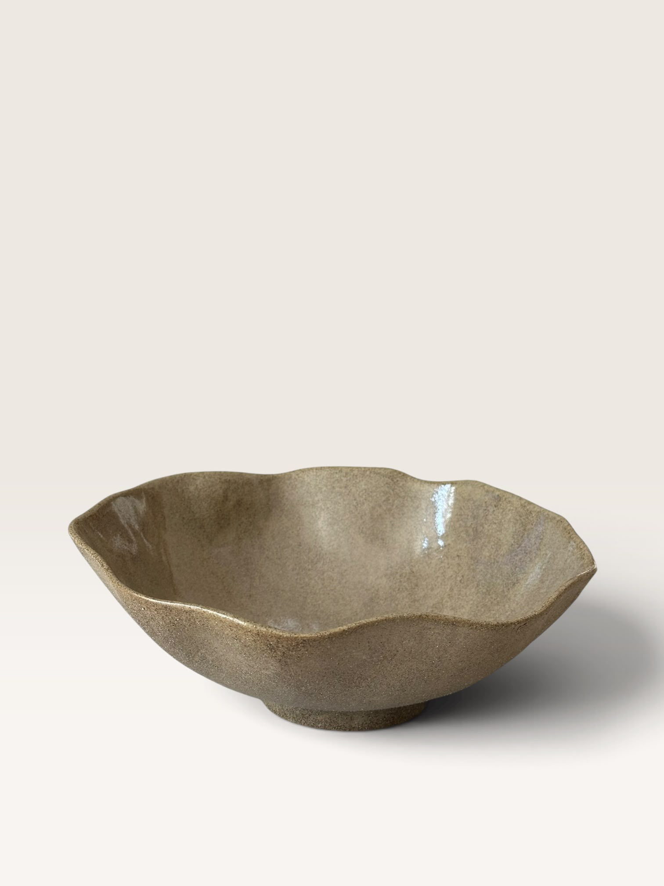
Yeni SeçkiOrganik Kenarlı Kâse
Toprak tonlarında, dalgalı kenarlı seramik kâse.
Tornada tek tek form bulan, 1200°C yüksek fırınlama ile taşlaşan ve doğal mineral sırlarla hayat kazanan çağdaş seramik eserlerimiz.

Yeni SeçkiToprak tonlarında, dalgalı kenarlı seramik kâse.
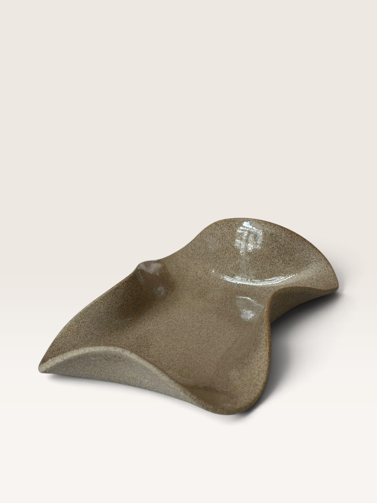
Yeni SeçkiKıvrımlı kenarlarıyla organik formlu servis tabağı.
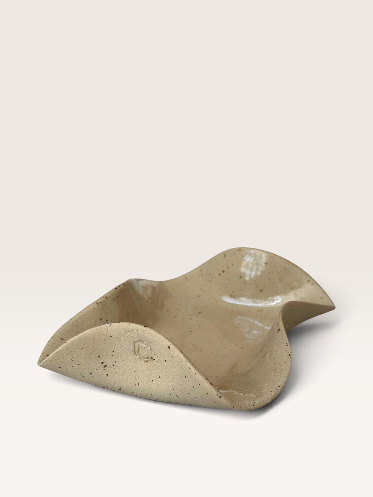
Yeni SeçkiBenekli krem dokulu, kıvrımlı servis tabağı.
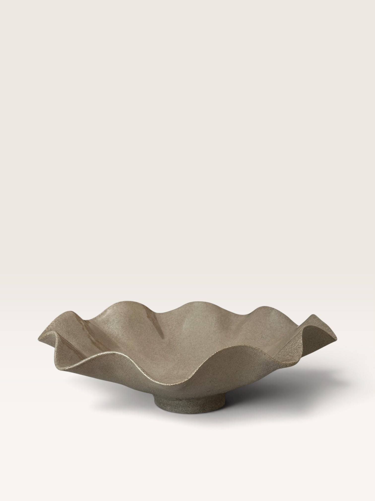
Yeni SeçkiGeniş, dalgalı kenarları ve ayaklı formuyla seramik meyvelik.
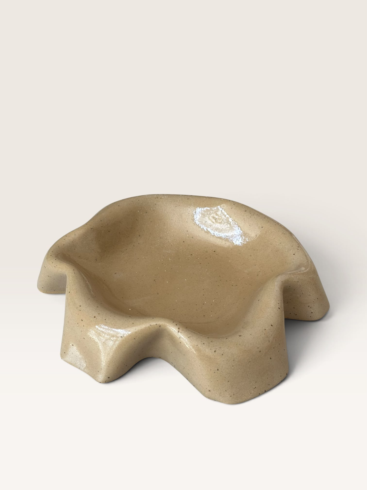
Yeni SeçkiKrem tonlarında, heykelsi kenarlara sahip seramik kâse.
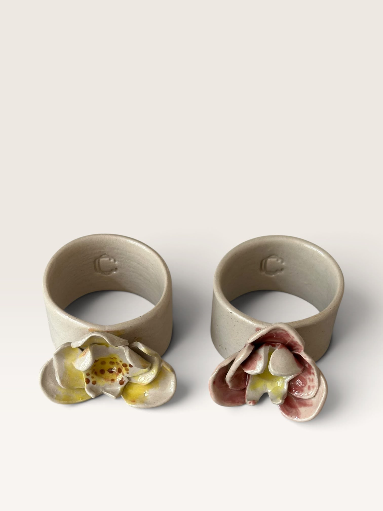
Yeni SeçkiÇiçek detaylı seramik peçete halkaları.
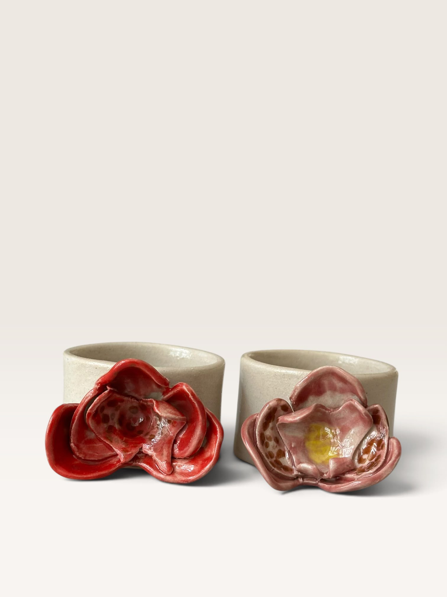
Yeni SeçkiKırmızı ve pembe çiçek detaylı seramik peçete halkaları.
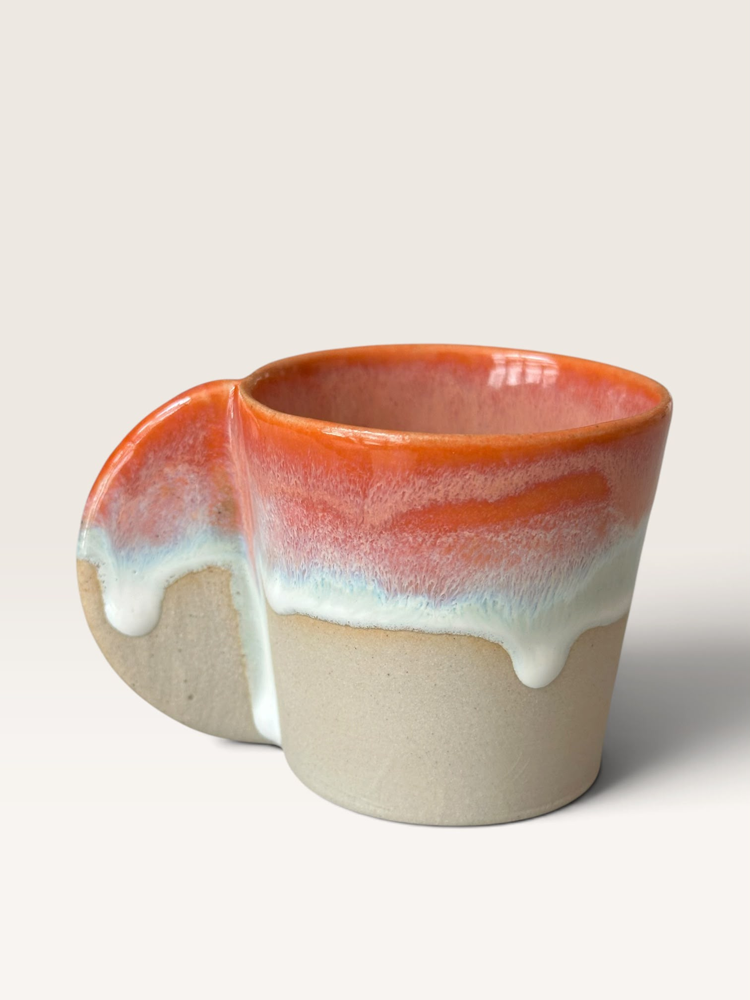
Yeni SeçkiMercan ve açık renk sır geçişleri, yuvarlak kulplu tasarım.
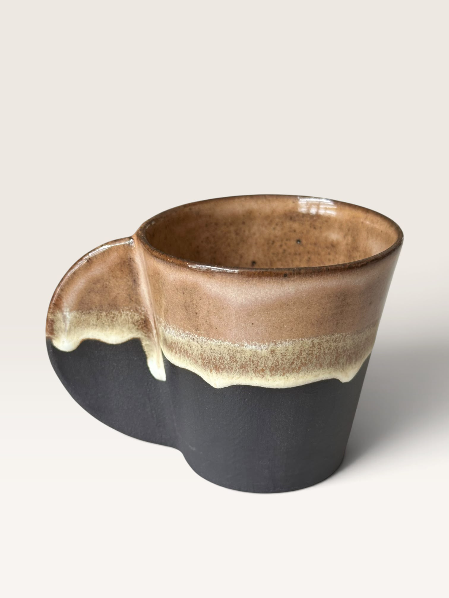
Yeni SeçkiToprak tonlarında sır ile koyu gövdenin buluşması.
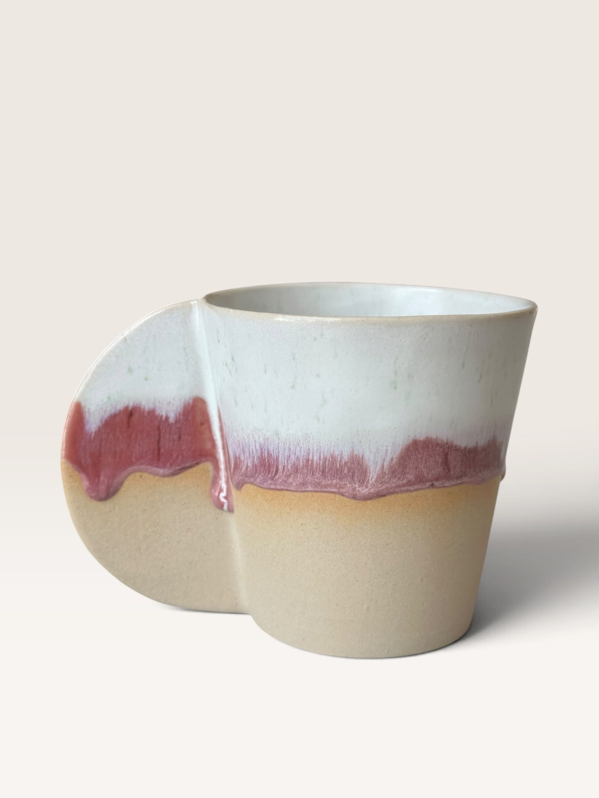
Yeni SeçkiPembe ve krem sır geçişleriyle yuvarlak kulplu kupa.
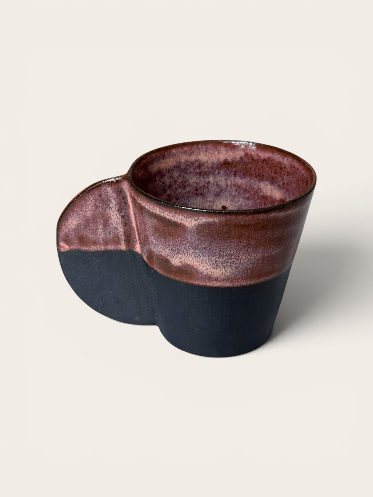
Yeni SeçkiBordo sır ve koyu gövdesiyle yuvarlak kulplu kupa.
Estetik ve işlevselliğin harmanlandığı, farklı kullanım alanlarına yönelik el yapımı kategorilerimizi keşfedin.
1200°C’de pişirilen stoneware sofra ürünlerimiz günlük kullanıma dayanıklıdır. Gıda ile temasa uygundur ve bulaşık makinesinde yıkanabilir.
Her siparişi koruyucu malzemelerle dikkatlice paketliyor ve kargoya teslim ediyoruz.